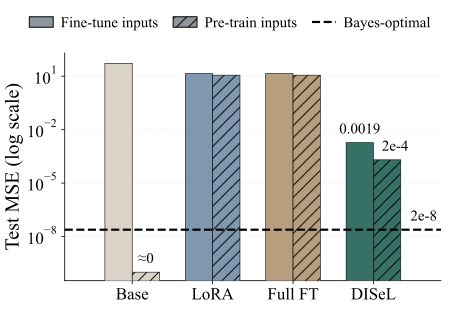
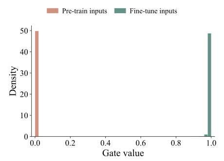
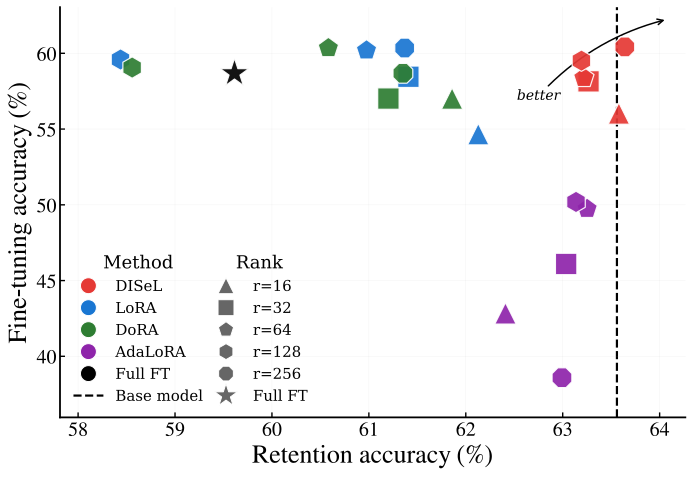
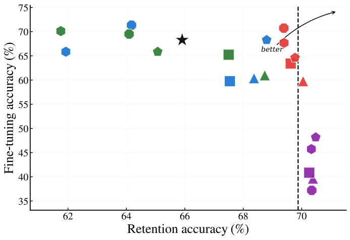
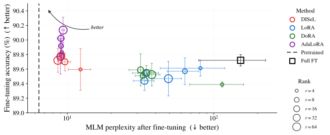
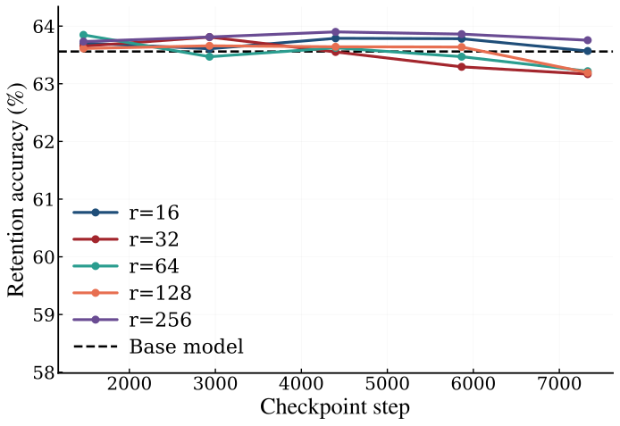
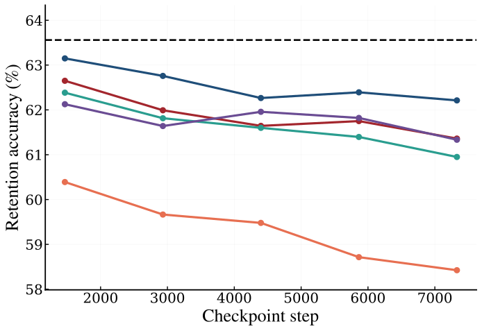
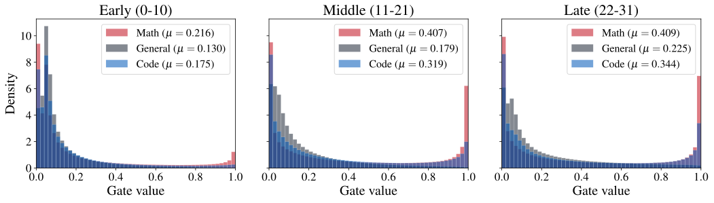
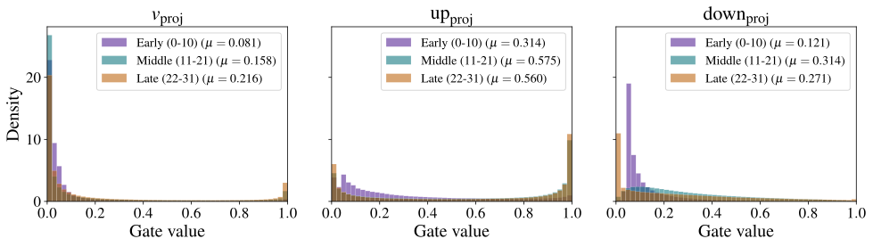

1The forgetting problem
A fine-tuned model adds a learnable correction $f(\x;\theta)$ on top of the frozen pre-trained weights:
Full FT, LoRA, DoRA, AdaLoRA are all the special case $f(\x;\theta) = \Delt\,\x$, with a fixed matrix $\Delt$ that does not depend on $\x$. They differ only in how $\Delt$ is parameterized.
The same correction $\Delt\,\x$ is therefore applied to fine-tuning inputs (where adaptation is needed) and to pre-training inputs (where the original mapping should be preserved).
Consequence: task accuracy improves, but the model loses general capability. This is catastrophic forgetting.
2A minimal linear analysis
Symmetric mixture of fine-tuning and pre-training populations:
Loss after subtracting the frozen mapping:
No fixed correction can do both
With equal second moments $\Sig$, the optimal fixed $\Delt$ is
No fixed $\Delt$, including full FT, can both fit the FT signal and preserve pre-training: it applies only half of the desired update on $\pft$ and a non-zero spurious update on $\ppt$.
Bayes-optimal input-dependent correction
Allowing $f$ to depend on $\x$, the pointwise minimizer is
A soft switch: $\pift\to 1$ on FT inputs, $\pift\to 0$ on pre-training inputs. No measurable correction can do better.
Gaussian case: the sigmoid is exact
When $\pft=\mathcal{N}(\muft,\Sig)$ and $\ppt=\mathcal{N}(\mupt,\Sig)$ share covariance, the log-density ratio is affine, so the posterior is a sigmoid:
Hence the Bayes-optimal correction has the closed form
DISeL realizes $f^{\star}$ exactly
Factor $\M=\A\B$ (which exists whenever $\operatorname{rank}(\M)\le r$). Set the gate parameters
Then every rank's gate carries the same value $g_i(\x)=\pift(\x)$, so
A sigmoid-gated LoRA with the right parameters realizes the Bayes-optimal correction exactly. DISeL is the smallest learnable family containing this optimum.
3Toy experiment


4DISeL: input-dependent gates over rank-1 components
We keep LoRA's low-rank structure $\A\B\x$ with $\A \in \Rb^{d_y\times r}$ and $\B \in \Rb^{r\times d_x}$, but multiply each rank-one component by a learnable input-dependent gate $g_i(\x) \in [0,1]$:
DISeL block
Design choices
- Init. $\bg = -3\cdot\mathbf{1}$, so $\sigma(\bg)\approx 0.05$. DISeL starts equal to the pre-trained model.
- Sigmoid (not softmax). Rank-one components are independent soft switches.
- Two-LR. Gates use a learning rate $5\times$ larger than $(\A,\B)$, since they solve a routing task, not a fitting one.
5LLaMA & Mistral on math & code
LLaMA-2-7B on MetaMathQA; Mistral-7B on Magicoder-Evol-Instruct. Retention = mean accuracy on 14 OOD benchmarks (commonsense, world knowledge, medical QA, …).


- DISeL: $\approx 60\%$ math accuracy (LLaMA) / $> 70\%$ code (Mistral) with retention within a fraction of the base.
- LoRA / DoRA: retention drops 4–8% at the largest ranks.
- AdaLoRA: keeps retention but FT accuracy collapses to 40–50%.
- Implicit regularization. Gates stabilize training at large LR / rank.
6RoBERTa on GLUE
RoBERTa-base on five GLUE tasks, $r\in\{4,8,16,32,64\}$. Retention = mean MLM perplexity (base $\approx 6.4$).

- DISeL & AdaLoRA: $\text{ppl}\approx 9$, matching Full FT accuracy without any pruning schedule.
- Full FT tops accuracy but pushes ppl to $\approx 150$; LoRA / DoRA sit at ppl $30$–$100$.
7Retention over training
Retention trajectory of LLaMA-2-7B on MetaMathQA across saved checkpoints, for ranks $r\in\{16,32,64,128,256\}$.


- DISeL. Retention within $\approx 0.5\%$ of the base model at every rank and checkpoint.
- LoRA. Largest drift ($\approx 5\%$) at $r=128$, not $r=256$: $r=256$ needed a smaller learning rate ($10^{-4}$) for stability while $r=128$ used a twice-larger step. Rank alone does not decide forgetting; learning rate matters too.
- Mechanism. DISeL gates stay inactive on pre-training inputs, so neither extra capacity nor larger learning rates leak into drift.
8Interpretability: where & when gates open
Held-out samples from three domains (math = FT, general text, code). Gate activations recorded at every adapted layer of the rank-32 LLaMA math adapter.
Domain-conditioned routing

- Early layers stay closed across all domains, so no adaptation is needed near the input.
- Middle / late layers: math $\bar g \approx 0.41 \to 0.41$; general text $\bar g \approx 0.18 \to 0.23$, a clear separation.
- Code sits between math and general text because it shares structured reasoning with math.
Module-level routing

- up_proj dominates the math adaptation, with middle/late mean gate $\approx 0.57$.
- down_proj shows a weaker version of the same trend ($\bar g \approx 0.31$).
- v_proj stays comparatively closed ($\bar g \approx 0.16$).
- A free diagnostic. Gate statistics reveal where task-specific capacity concentrates, which is useful for adaptive rank selection and module design.
★Takeaways
- Any fixed adapter (full FT, LoRA, DoRA, AdaLoRA) must compromise between fitting the task and preserving pre-trained behavior. We prove this in a minimal linear-regression model and show it empirically.
- The Bayes-optimal input-dependent correction is a sigmoid gate times the task update, which directly motivates DISeL.
- DISeL adds $rd_x + r$ parameters per block (≲ 1% of LoRA), matches LoRA's inference cost, and starts equal to the pre-trained model.
- Across RoBERTa / GLUE, LLaMA / math, Mistral / code, DISeL decouples adapter rank from forgetting: retention stays near the base model while FT accuracy meets or beats LoRA, DoRA, AdaLoRA.
- Learned gate activations give a free interpretability tool: they reveal which layers and modules absorb task-specific signal (here: up_proj, middle/late layers).